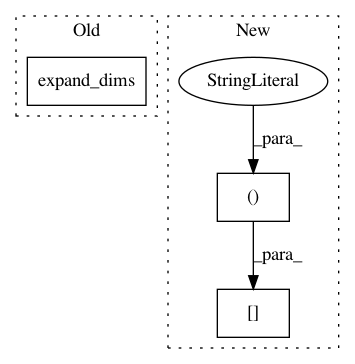

acc533ac66fa4d19420a36006ece53a440d03761,gpflow/covariances/kuus.py,,_Kuu,#,15
Before Change
Zmu, Zlen = kern.slice(feat.Z(), feat.scales())
idlengthscales2 = tf.square(kern.lengthscales() + Zlen)
sc = tf.sqrt(
tf.expand_dims(idlengthscales2, 0) + tf.expand_dims(idlengthscales2, 1) - tf.square(
kern.lengthscales()))
d = feat._cust_square_dist(Zmu, Zmu, sc)
Kzz = kern.variance() * tf.exp(-d / 2) * tf.reduce_prod(kern.lengthscales() / sc, 2)
After Change
def _Kuu(feat: Multiscale, kern: RBF, *, jitter=0.0):
Zmu, Zlen = kern.slice(feat.Z(), feat.scales())
idlengthscales2 = tf.square(kern.lengthscales() + Zlen)
sc = tf.sqrt(idlengthscales2[None, ...] + idlengthscales2[:, None, ...]
- kern.lengthscales() ** 2)
d = feat._cust_square_dist(Zmu, Zmu, sc)
Kzz = kern.variance() * tf.exp(-d / 2) * tf.reduce_prod(kern.lengthscales() / sc, 2)
Kzz += jitter * tf.eye(len(feat), dtype=Kzz.dtype)
In pattern: SUPERPATTERN
Frequency: 4
Non-data size: 3
Instances
Project Name: GPflow/GPflow
Commit Name: acc533ac66fa4d19420a36006ece53a440d03761
Time: 2018-11-05
Author: art.art.v@gmail.com
File Name: gpflow/covariances/kuus.py
Class Name:
Method Name: _Kuu
Project Name: fgnt/pb_bss
Commit Name: 49a3ebf5f465bf4310cc55dc7e81ec2994c10154
Time: 2019-03-14
Author: heitkaemper@nt.upb.de
File Name: paderbox/speech_enhancement/beamformer.py
Class Name:
Method Name: get_wmwf_vector
Project Name: oarriaga/face_classification
Commit Name: 4ca83a3646f5e83a3bd104c408acdb906dd4952c
Time: 2017-05-05
Author: arriaga.camargo@gmail.com
File Name: src/video_test.py
Class Name:
Method Name:
Project Name: xinntao/BasicSR
Commit Name: 6917d8a3dbf6617f02b1247fd50fbc20d3cb6fd4
Time: 2018-06-10
Author: wxt1994@126.com
File Name: codes/data/LR_dataset.py
Class Name: LRDataset
Method Name: __getitem__